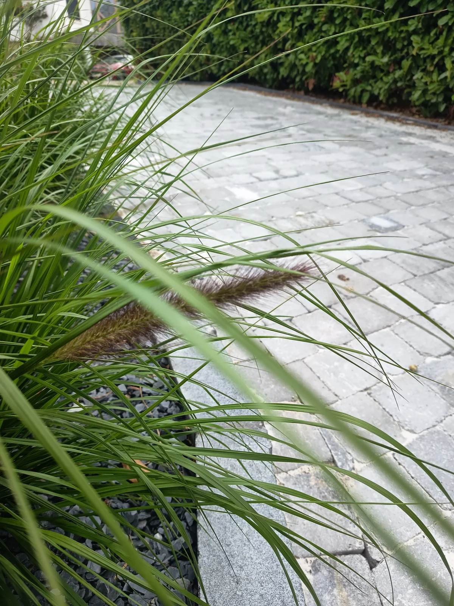
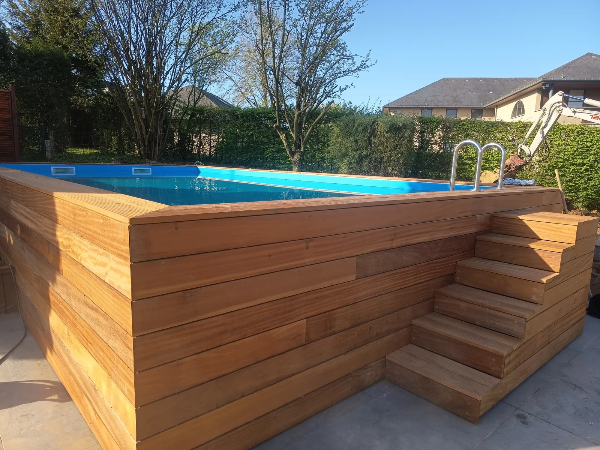
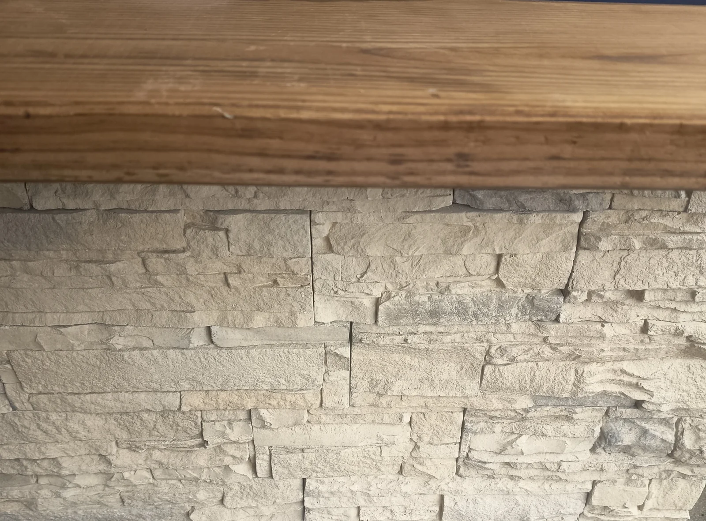
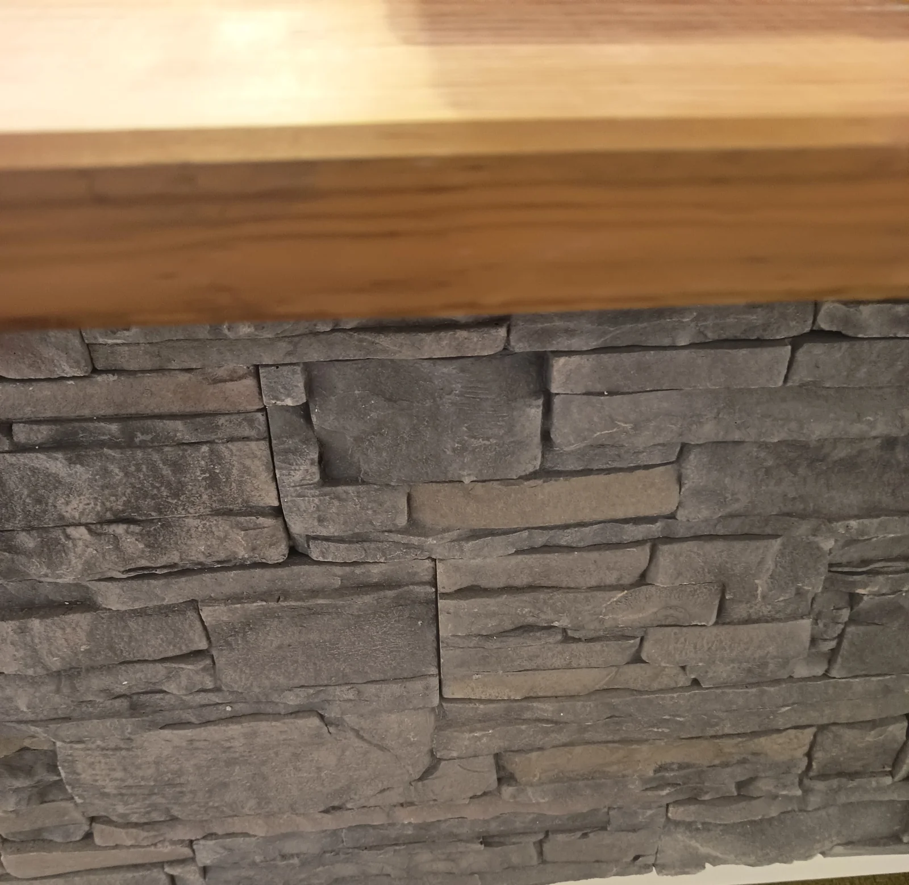

Terrassement et niveaux
Préparation du terrain, accès au chantier et adaptation des niveaux selon le projet.
Aménagements extérieurs · Avec ou sans piscine
Une terrasse au bon niveau, des circulations agréables, des matériaux qui se répondent. Nous organisons les travaux pour donner une cohérence à votre jardin.

Piscine, terrasse et lumière
Les abords font partie de l’expérience : matières, circulations, espaces de détente et éclairage se pensent ensemble.


Matières et circulations
Une allée, les abords d’une terrasse, le lien avec les plantations : les matières et les niveaux donnent une continuité à votre extérieur.
Du terrain aux finitions
Préparation du terrain, accès au chantier et adaptation des niveaux selon le projet.
Pavage et cheminements pour relier la maison, le jardin et les différents espaces.
Composition des espaces et plantations pour accompagner les matériaux et les usages.
Raccords, margelles, habillages et détails qui relient chaque partie du chantier.
Matières et détails



Votre projet, à votre rythme
Vous souhaitez commencer par la piscine, la terrasse ou une partie du jardin ? Nous étudions les interfaces entre les travaux pour construire une proposition cohérente.
Décrire mon extérieurRéalisations LC Création
Nivelles
Braine-l’Alleud
LC Création · Grez-Doiceau et Brabant wallon
Envoyez-nous votre commune, quelques photos et les travaux envisagés. Nous précisons ensemble la suite du projet.